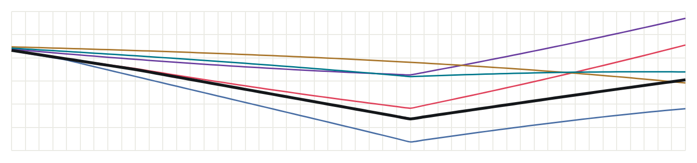
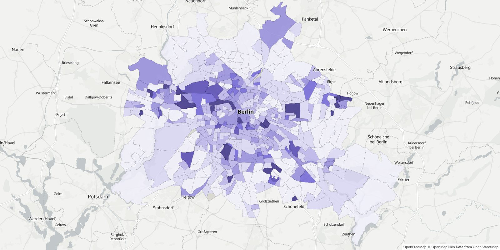

Der Volksentscheid „Deutsche Wohnen & Co enteignen" (26. September 2021) sprach sich mit 59,1 % der gültigen Stimmen dafür aus, Wohnungsunternehmen mit mehr als 3.000 Berliner Wohnungen im Bestand zu vergesellschaften. Der Senat setzte daraufhin eine Expertenkommission ein; ein Umsetzungsgesetz gibt es bis heute nicht. Dieses Projekt sammelt die Kostenschätzungen, Rechtsgutachten und empirischen Studien zu diesem Vorhaben, macht sie in einem interaktiven Modell durchrechenbar und dokumentiert, welche Zahl aus welcher Quelle stammt.
Das interaktive Rechenmodell verbindet Entschädigung, Finanzierung, Mieten und Bewirtschaftung zu einer Rechnung. Fünf Positionen sind hinterlegt und per Klick abrufbar: Faire-Mieten-Modell (DWE 2022), DWE-Gesetzentwurf (2025), Bernt/Holm (2023), Rechnungshof (2024) und IW/Empirica (2026). Regler für Verkehrswert, Entschädigungsquote, Zinssatz, Tilgungsdauer, Miete, Bewirtschaftungskosten und Reinvestition in Neubau zeigen, wie jede einzelne Annahme das Ergebnis verschiebt. Eigene Einstellungen lassen sich sichern.

Der rechtliche Rahmen nach Art. 15 GG, der Streit um die Entschädigungshöhe zwischen Mehrheit und Sondervotum der Expertenkommission, das Verfahren der Wertermittlung und die rechtliche Einordnung im Bericht des Landesrechnungshofs von 2024.
Die wichtigsten Zahlen im Modell in normaler Sprache und im Abgleich der Quellen: wie viele Wohnungen betroffen sind, warum die Gesamtkosten zwischen 8 und 39 Mrd. € schwanken, was der Rechnungshof rechnet, welche Mieten zugrunde liegen, woher der Verkehrswert von 2.085 €/m² stammt, wer hinter dem Gutachten von IW/Empirica steht und wie das Modell rechnet. Tabellen stellen die Angaben der einzelnen Quellen nebeneinander; Fußnoten nennen Quelle und Seite; Grenzen des Modells und Widersprüche sind benannt. Am Ende steht die vollständige Quellenliste.
Die Fachbegriffe aus Modell und Rechtsstreit, von Art. 15 GG über Verkehrswert, Ertrags- und Vergleichswertverfahren und Liegenschaftszins bis zu Annuität, Zinsbindung und Bewirtschaftungskosten.
Eine interaktive Karte Berlins mit amtlichen Geodaten: Eigentumsstruktur nach Planungsräumen, Grundstücke der landeseigenen Wohnungsunternehmen, Erhaltungs-, Sanierungs- und Vorkaufsrechtsgebiete, Großsiedlungen, Wohnungsbaupotenziale aus dem StEP Wohnen 2040, Wohnatlas, Bodenrichtwerte 2026, Monitoring Soziale Stadtentwicklung und Einwohnerdichte.
